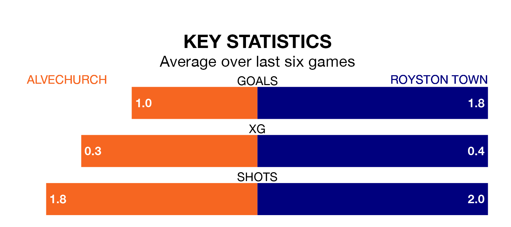

Royston Town visit Alvechurch at Lye Meadow on late Tuesday on the back of five consecutive wins in Southern League Premier Central.
Royston have picked up 16 points from their last six games, and they face an Alvechurch side who drew their last match, and have collected eight points from the last possible 18.
In the last 10 years, Alvechurch and Royston have played each other on 10 occasions. Alvechurch won three of them, Royston four, and they drew three times.
On average, Alvechurch scored 0.9 goals and Royston 1.3 in those matches.
Their last meeting was on September 9, when Royston won 4-1 at home.
Alvechurch are 19th in the table after 26 games, of which they have won seven and drawn seven, earning 28 points.
Royston are eight places ahead of the hosts in 11th, with 11 wins and five draws putting them on 38 points.
With 32 goals in 26 games so far this season, Alvechurch are scoring at below the league average rate with 1.2 goals per game. And they are conceding more than average, letting in 47 goals at a rate of 1.8 per game.
Town are also below average scorers, with 1.4 goals per game, compared to a league average of 1.5. They have conceded 1.5 goals per game.
Alvechurch's last match was on Saturday, a 1-1 draw against Leamington.
Royston beat Berkhamsted 3-0 last time out, also on Saturday.
Updated: 13:20 (UTC), 29/01/24